وب سایت رسمی زنده یاد منوچهر شمشیری، قهرمان دو و میدانی ایران و آسیا و از پیشکسوتان ورزش ایران. در اینجا می توانید با زندگی ورزشی، افتخارات، فعالیت های مربیگری و خاطرات او در رشته های دو و میدانی، والیبال و کشتی آشنا شوید.
مروری بر سال های فعالیت منوچهر شمشیری در ورزش، از دوران قهرمانی تا مربیگری و پرورش ورزشکاران.
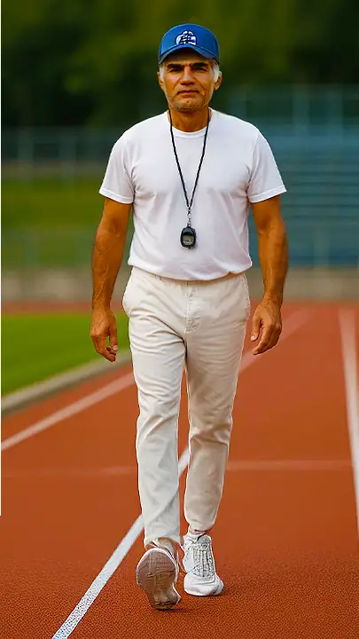
روایتی از سال های مربیگری منوچهر شمشیری و فعالیت های او در پرورش ورزشکاران.
بیشتر بخوانید ←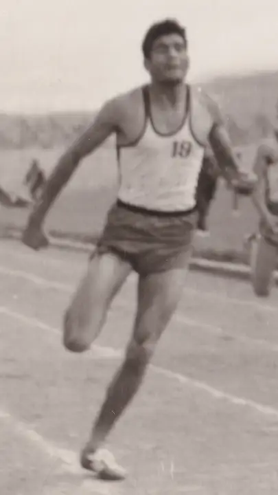
مروری بر مسابقات، افتخارات و حضور منوچهر شمشیری در رقابت های ملی و آسیایی.
بیشتر بخوانید ←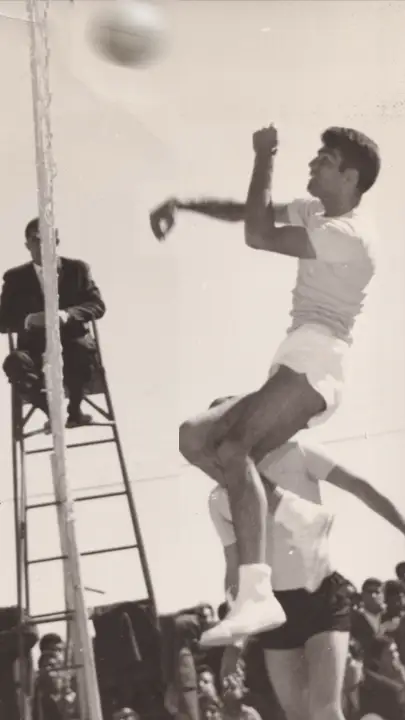
نگاهی به فعالیت های منوچهر شمشیری در رشته والیبال.
بیشتر بخوانید ←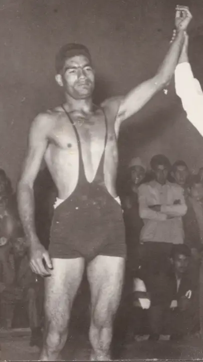
آشنایی با سال های آغازین فعالیت ورزشی منوچهر شمشیری در رشته کشتی.
بیشتر بخوانید ←منوچهر شمشیری از ورزشکاران و مربیان ایرانی بود که بخش مهمی از زندگی خود را به ورزش اختصاص داد. او در رشته دو و میدانی به عنوان ورزشکار فعالیت داشت و در کنار آن، در والیبال و کشتی نیز به فعالیت و مربیگری پرداخت. شمشیری در دوران مربیگری خدمات قابل توجهی به ورزش ایران، استان خراسان و به ویژه شهر بیرجند ارائه کرد و با آموزش و پرورش ورزشکاران، نقش مهمی در رشد و پیشرفت دو و میدانی در این مناطق داشت.
شمشیری در طول سال های فعالیت خود، شاگردان بسیاری تربیت کرد که تعدادی از آنها به موفقیت های ورزشی و مقام های کشوری دست یافتند. از جمله ورزشکارانی که نامشان در ارتباط با این مسیر ورزشی مطرح می شود، می توان به حمید سجادی و حسن یوسفی اشاره کرد. او همچنین در دهه ۱۳۷۰ شمسی به عنوان سرپرست تیم ملی دو و میدانی ایران فعالیت داشت و در این جایگاه، در کنار دیگر مسئولان و مربیان، در امور تیم ملی مشارکت می کرد.
این وب سایت با هدف معرفی زندگی ورزشی، مرور افتخارات و ثبت خاطرات منوچهر شمشیری ایجاد شده است؛ روایتی از سال های حضور او در عرصه ورزش، دستاوردهای دوران قهرمانی، فعالیت های مربیگری و تلاش های او برای آموزش و پرورش نسل های تازه ورزشکاران.
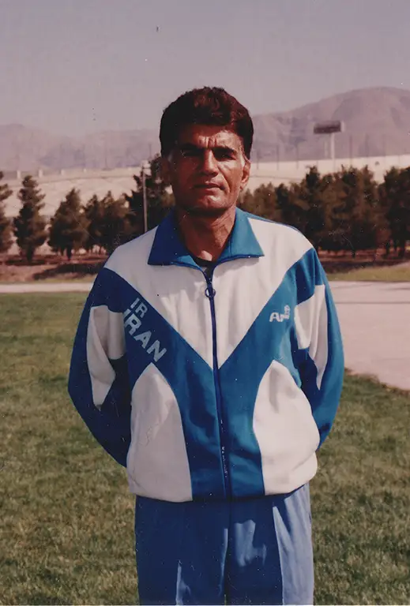
از تولد در نیشابور تا تحصیل در دانشکده افسری
منوچهر شمشیری در ۲۰ اردیبهشت ۱۳۲۱ (۱۰ مه ۱۹۴۲) در شهر نیشابور، واقع در استان خراسان، متولد شد. او دوران کودکی و سال های نخست زندگی خود را در ایران گذراند و بعدها مسیر زندگی اش به سوی ورزش و فعالیت های نظامی پیش رفت.
شمشیری پس از گذراندن دوران تحصیل، به دانشکده افسری ارتش در بیرجند پیوست. این دوره از زندگی او، در کنار آموزش های نظامی، با شکل گیری مسیر ورزشی اش همراه شد.
فعالیت در رشته های مختلف ورزشی، از جمله دو و میدانی، کشتی و والیبال، بخش مهمی از زندگی او را تشکیل داد. مسیری که بعدها با حضور در رقابت های ورزشی و فعالیت در عرصه مربیگری ادامه پیدا کرد.
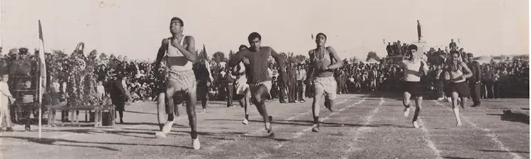
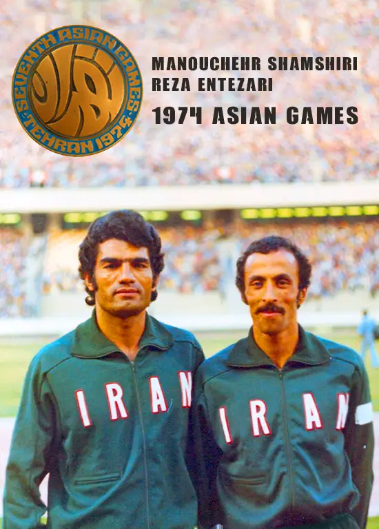
منوچهر شمشیری در بازی های آسیایی ۱۹۷۴ تهران در رشته دهگانه به نمایندگی از ایران رقابت کرد و به مدال برنز دست یافت.
او همچنین در مسابقات جهانی نظامیان در مسکو حضور یافت و در ماده دوی ۱۱۰ متر با مانع، مدال طلا کسب نمود. این نتایج بخشی از کارنامه ورزشی او در رقابت های بین المللی بود.
بیشتر درباره دستاوردهای ورزشی شمشیری بخوانید ←از سال های مربیگری در بیرجند تا همکاری با تیم ملی دو و میدانی ایران.
منوچهر شمشیری بخش مهمی از دوران مربیگری خود را در شهر بیرجند سپری کرد و خدمات قابل توجهی به توسعه ورزش در این شهر و استان خراسان ارائه داد. او با آموزش ورزشکاران جوان و شناسایی استعدادهای مستعد، در پرورش نسل های مختلفی از دوندگان نقش داشت و شاگردان بسیاری را برای حضور در رقابت های استانی و کشوری آماده کرد.
شماری از ورزشکارانی که در این مسیر پرورش یافتند، بعدها به موفقیت های ورزشی و مقام های کشوری دست پیدا کردند. از جمله نام هایی که در ارتباط با فعالیت های ورزشی او مطرح می شوند، می توان به حمید سجادی و حسن یوسفی اشاره کرد. فعالیت های مربیگری او بخشی از تلاش های مستمر برای شناسایی و پرورش استعدادهای دو و میدانی در خراسان بود.
در دهه ۱۳۷۰ شمسی، شمشیری مسئولیت سرپرستی تیم ملی دو و میدانی ایران را نیز بر عهده داشت. این مسئولیت، تجربه سال های فعالیت او در ورزش و مربیگری را به سطح ملی پیوند داد. فعالیت های او در دوران مربیگری، در کنار دستاوردهای ورزشی اش، بخش مهمی از زندگی حرفه ای او را تشکیل می دهد.
منوچهر شمشیری در سال های پایانی زندگی خود در شهر مشهد حضور داشت. سال های فعالیت او در ورزش، از دوران قهرمانی تا مربیگری، بخشی از تاریخ ورزشی خانواده ها، شاگردان و ورزشکارانی است که با تلاش های او آشنا بودند.
درباره دستاورد های مربیگری شمشیری بیشتر بخوانید ←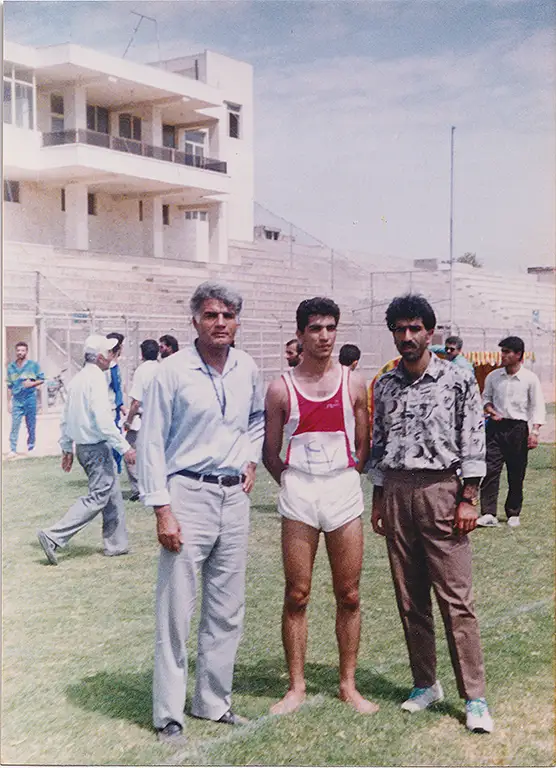
گرامیداشت یاد و خاطره منوچهر شمشیری، با حضور خانواده و شاگردان او.
در دی ماه سال ۱۴۰۴، مراسم بزرگداشت زنده یاد منوچهر شمشیری با همت فدراسیون ورزش شهرستان بیرجند در ورزشگاه این شهر برگزار شد. این مراسم در حاشیه اختتامیه مسابقات والیبال برگزار شد و همسر و فرزندان آن مرحوم، جمعی از شاگردان قدیمی و پیشکسوتان ورزش در آن حضور داشتند.
این مراسم فرصتی بود تا خانواده، شاگردان و اهالی ورزش یاد و خاطره منوچهر شمشیری را گرامی بدارند و از سال ها فعالیت او در عرصه ورزش و مربیگری یاد کنند. حضور شاگردان و پیشکسوتان در این گردهمایی، یادآور ارتباط او با جامعه ورزشی بیرجند و نقش سال های مربیگری اش در آموزش و پرورش ورزشکاران بود.
لحظاتی از سخنرانی در مراسم بزرگداشت
حضور خانواده و شاگردان در مراسم
تجلیل از مقام ورزشی منوچهر شمشیری
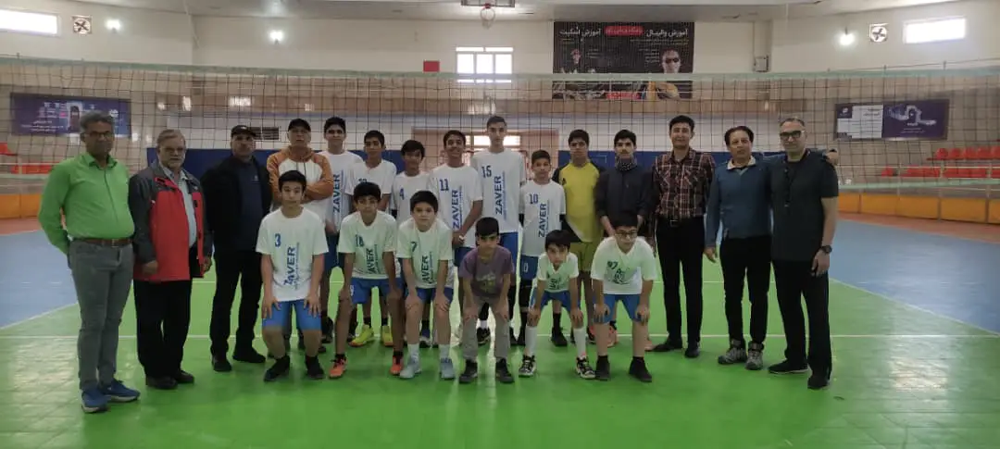
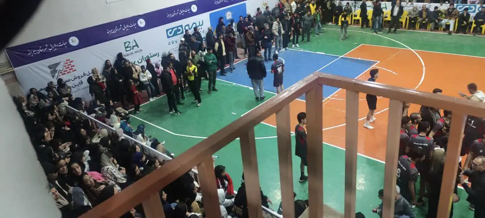
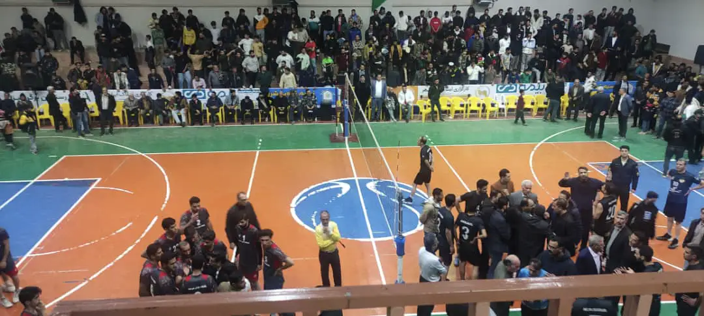
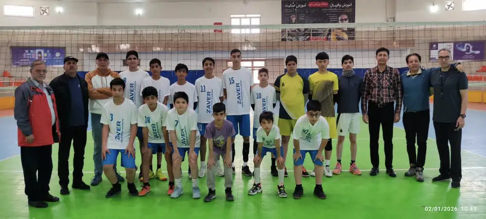